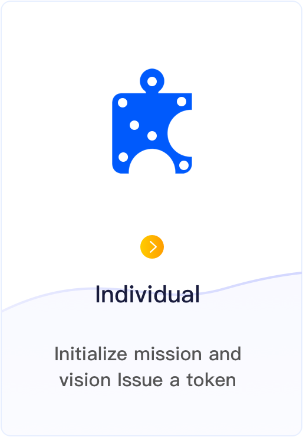
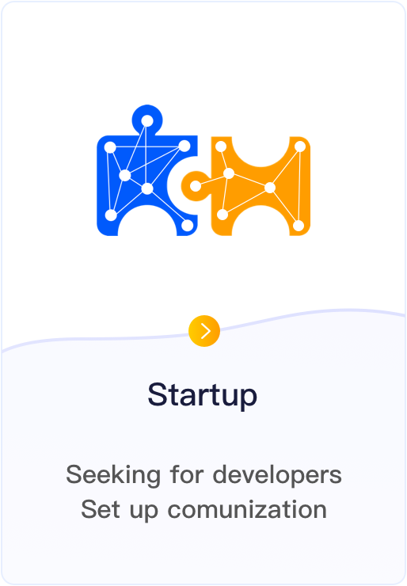
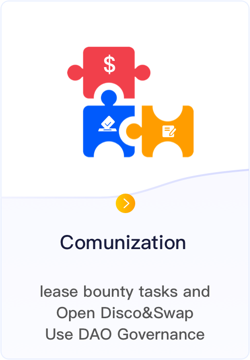
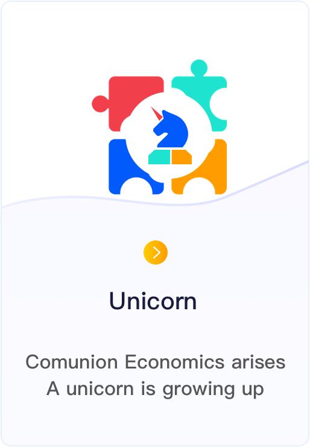
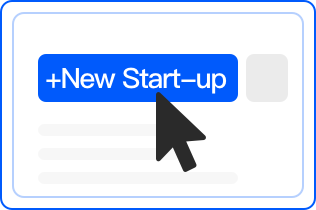

Comunion is a next, new start-up paradigm of digital economic growth
Through the comunization form, Integrating remaining productivity of labor to construct a new startup mutual network, that is comunion economic paradigm, promote success rate of startup, in this process, realize labor-capitalized , enhance labor value liquidity




The mission and vision of Comunion is to settle:
In globalization times, we come into the intelligent and digital age, with artificial intelligence and platform for the mainstream economic pattern, with huge GDP growth, meanwhile also brought some new pains to us
-
Break the industry monopoly
Talent is the primary factor of production. Through Comunion, more talents within the centralized organization can be attracted to shift paradigm, and a more creative and large-scale comunization can be constructed, to deconstruct the centralized talent organization and finally break the industry monopoly
-
Promote the success of innovation and Startup
Cost is the root cause the difficulty and failure of innovation and Startup. Through Comunion model is to build startup mutual of model, can not only essentiality reduce the cost of startup and innovation, but also enhance the success ration due to the integration of diverse ideas
-
The transformation of labor-capitalized
The labor-value is converted into currency under the tradition employment, under the comunion economic paradigm, laborers will convert labor-value into token, which, according to the digital and liquidity characteristics of token, will then be converted into tradable securitized units to realize the conversion of labor capitalization
-
Reduce the Gap between rich and poor
Labor usually produces two kinds of values, labor value and capital value. Under the comunion economic paradigm, laborers can hold the capital value generated by labor themselves, thus reduce the gap between rich and poor
What can you do with Comunion?
In Comunion, you can realize your mission and vision. Through the new start-up paradigm, you can build and operate start-up so easily, meanwhile it supports fund-raising and governance function, you just need to focus your dream, All the others things let comunion to do
-
Build Start-Up
Build Start-Up on blockchain, link developers with common vision from all over the world to build teams, promote the implementation of start-up projects
-
Bounty Post
Post bounty task to attract good bounty hunters to help you complete your task, and then turn into a bounty hunter to hunt bounty
-
Fund-Raising
Help start-up to raise the funds needed for the development, Help investors get well investment project, Help developers to change token to ETH
-
DAO Governace
Three kinds of governance templates are provided, which can be selected according to actual demands
How to use Comunion?
Just three steps, you can inject your dream to start-up
-
Connect
Login comuion with metamask to link to ethereum
-

+New Start-up
Input your mission and vision to build start-up
-
To Submit
Transfer to submit start-up's content to public blockchain
Website last updated:October 16, 2020
Official Website: vi design by @Rainie, ui design by @大超, Develop by @O
Indivduals
Community
Social-Media